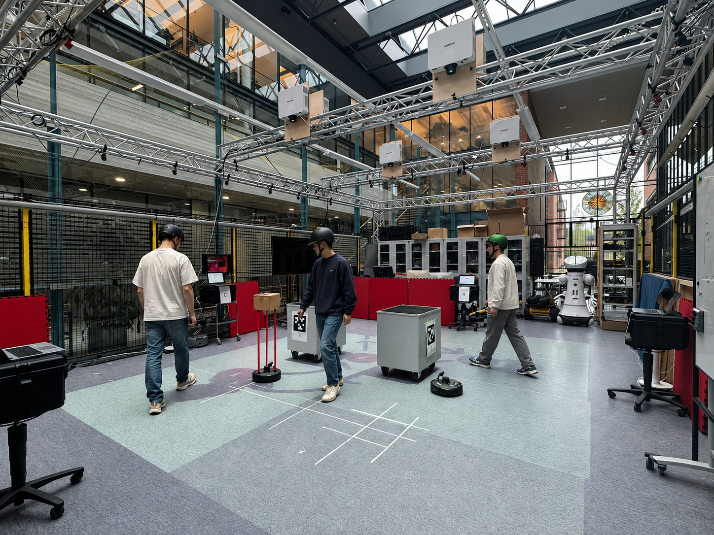
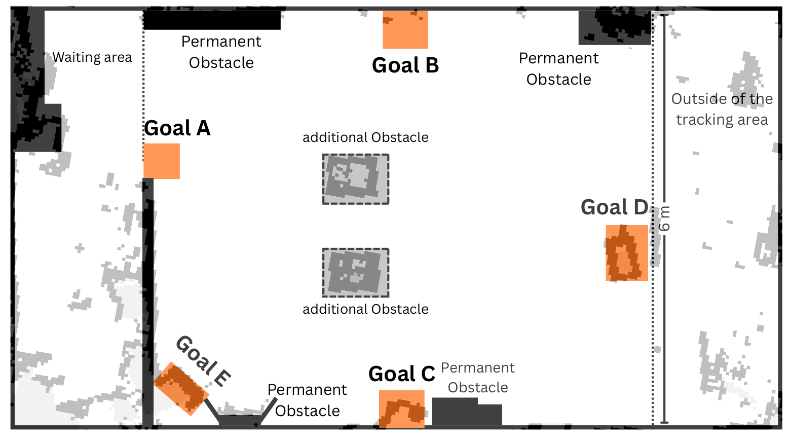
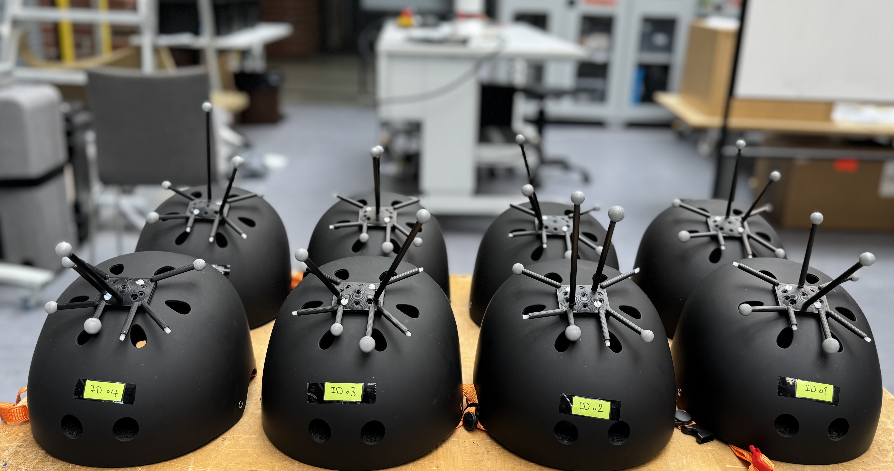
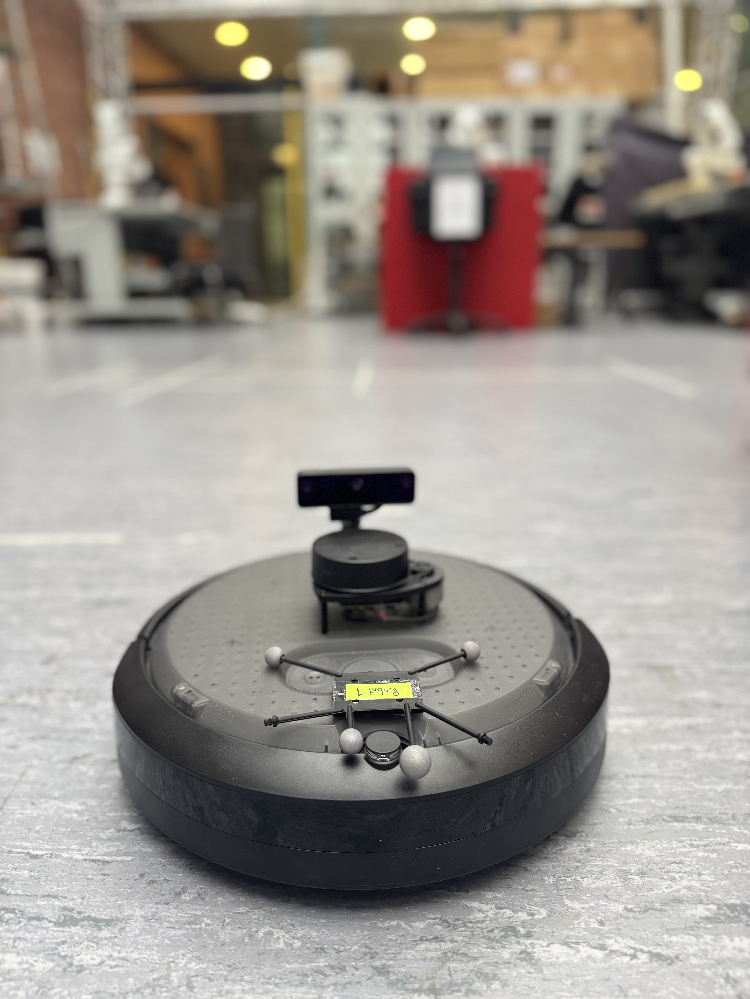
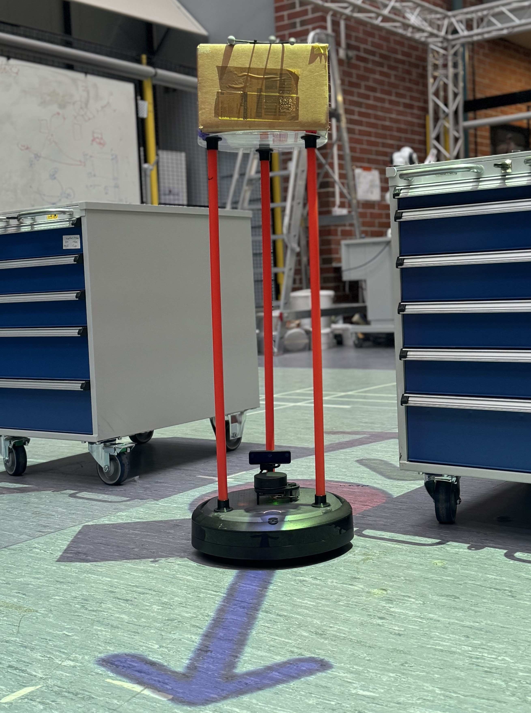
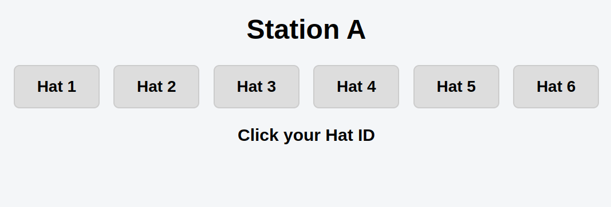
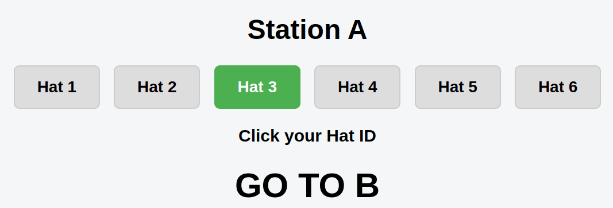
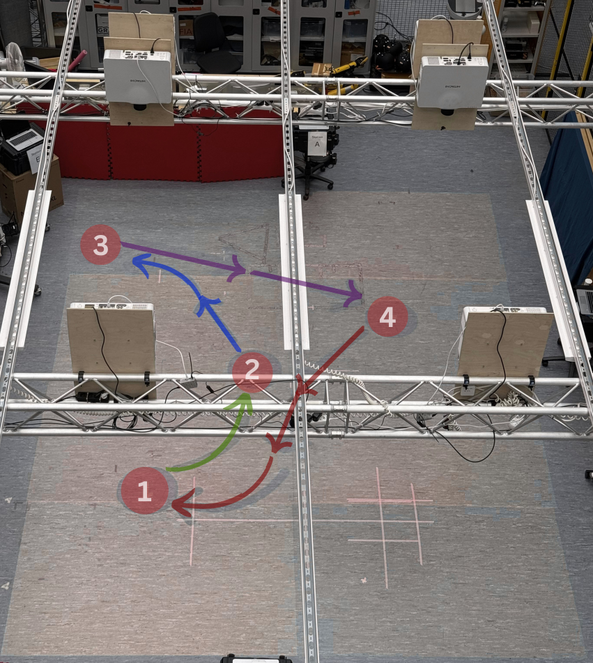

Human movement
Participants move through the environment without active robots, providing a baseline for human motion and task behaviour.

MULTIMODAL ROBOTICS DATASET
High-precision multimodal recordings of humans and mobile robots sharing dynamic environments.
ABOUT
CAGE contains synchronized multimodal recordings of humans and mobile robots sharing a controlled dynamic environment.
The dataset combines motion-capture trajectories with onboard robot sensor recordings, time-stamped pedestrian goals, experimental context, and subjective survey responses.
It is designed to support research in human-robot interaction, navigation, coordination, intent communication, and socially aware autonomy.
View the project on GitHub →02 — EXPERIMENT DESIGN
CAGE was collected in a controlled indoor environment where human participants and mobile robots performed goal-directed movements under different interaction conditions.
Experiments were conducted in a controlled 7 × 6 m indoor space equipped with a ceiling-mounted OptiTrack motion capture system. Human participants and mobile robots shared the same physical environment while their movements were recorded continuously.
The motion-capture system provided continuous 6-DoF pose measurements for tracked humans and robots throughout the experiments.


The experimental area was configured to provide a shared space for human movement and robot navigation. The controlled layout allows trajectories and interactions to be compared across experimental conditions.
Participants wore uniquely identifiable tracking helmets equipped with OptiTrack markers. This enabled continuous tracking of individual participants throughout each trial.
Participant identities were linked with experimental goals, timestamps, and scenario metadata, allowing human trajectories to be analysed together with task and interaction context.

Two TurtleBot 4 Lite platforms were used to introduce autonomous robot motion into the shared environment.
The robots represented two different navigation behaviours, providing complementary sources of robot motion and interaction data.

Base Random-goal navigation
Delivery Cyclic multi-goal navigation

Human participants received movement goals through a dedicated goal-generation system. The experimenter selected the participant's tracking ID and generated the next goal during the trial.
Each generated goal was recorded together with its timestamp, providing explicit task annotations that can be aligned with the corresponding human trajectory.
In the explicit-intent condition, a ceiling-mounted hardware-in-the-loop projection system displayed the robot's planned goal and path directly on the floor.
This provided a visible representation of the robot's intended movement and enabled controlled comparison between implicit and explicit robot intent communication.

The dataset provides synchronized human and robot trajectories, enabling analysis of motion patterns, interactions, and robot-human spatial relationships throughout the experiments.
EXPERIMENTAL SCENARIOS
The dataset spans four experimental conditions designed to separate environmental effects, robot presence, and explicit robot intent communication.
Participants move through the environment without active robots, providing a baseline for human motion and task behaviour.
Human movement is recorded in the presence of environmental obstacles without active robot interaction.
Two mobile robots operate in the shared environment without explicit visual communication of their intended motion.
Robot goals and planned paths are projected onto the floor, allowing participants to observe the robots' intended motion.
DATASET CONTENTS
CAGE connects precise motion measurements with task, robot, experimental, and subjective information.
High-precision 6-DoF trajectories for human participants and mobile robots.
Robot telemetry and onboard sensor recordings collected during selected trials.
Goal locations and timestamps generated for participants during each trial.
Participant responses measuring perceptions and preferences across experimental conditions.
GET STARTED
The complete CAGE dataset will be published on Zenodo. Until the public release, contact the authors for access to the current research release.
Contact the authors →Inspect trajectories, human goals, robot data, scenarios, surveys, and experimental context.
Use the provided toolkit to load, process, visualize, and analyse the recordings.
CITATION
The CAGE dataset citation will be provided with the public Zenodo release and associated publication.
For access to the current dataset or citation information, please contact the authors.
Contact the authors →PROJECT LINKS
This work was conducted at Aalto University and acknowledges the support of the Microelectronics and Digital and Autonomous Systems (MIDAS) infrastructure.